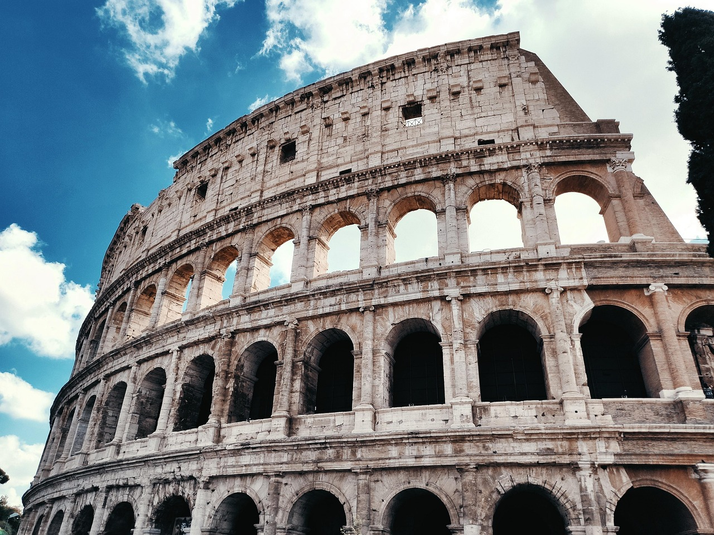
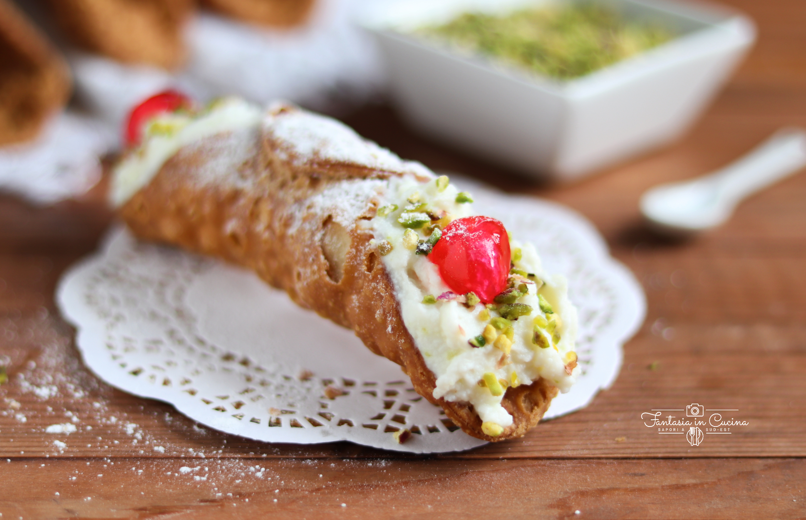
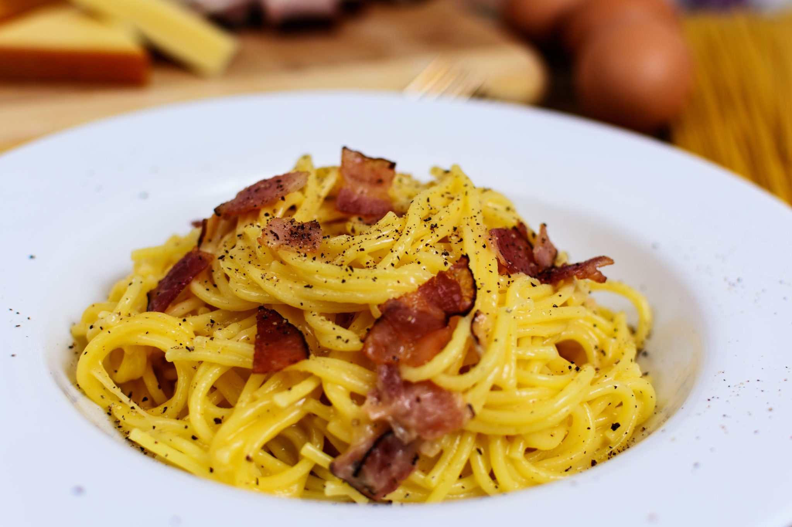
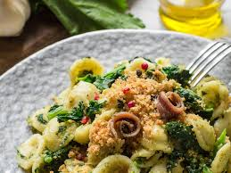
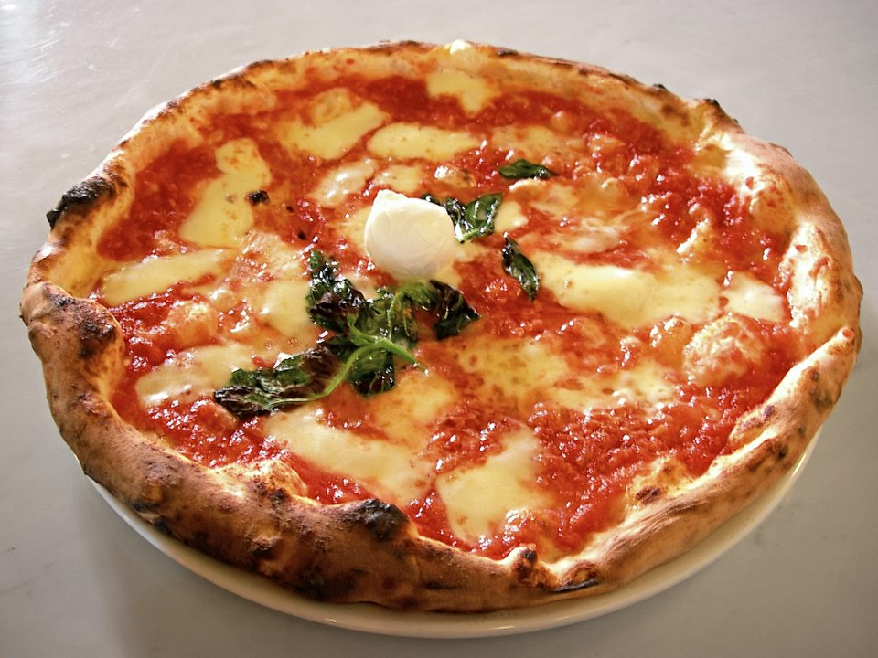

Enogastronomia Regionale Italiana

L’Italia è un Paese da scoprire… anche a tavola. Con l’iniziativa Viaggi del Gusto, vi invitiamo a esplorare alcune delle sue regioni più ricche di storia, tradizioni e sapori: Campania, Puglia, Sicilia, Lazio ed Emilia-Romagna.Un viaggio che parte dai profumi intensi della Sicilia, tra arancini, cannoli e mercati in festa, e arriva ai piatti veraci della Campania, con la sua celebre pizza e i dolci della tradizione napoletana. Passando per la Puglia, terra di ulivi, pane fragrante e orecchiette fatte a mano, e per il Lazio, dove la cucina romana racconta secoli di storia attraverso piatti semplici e gustosi. E infine l’Emilia-Romagna, cuore dell’eccellenza gastronomica italiana, patria della pasta fresca, dei salumi e del Parmigiano Reggiano. Lasciatevi guidare in questo percorso tra sapori e tradizioni che rendono l’Italia un’esperienza da vivere… e da gustare.

Sicilia
Terra di arance, pistacchi e dolci d’oriente Un mix di frutti solari, dolci barocchi e influenze arabe.
Go somewhere
Lazio
Terra di pasta e sapori veraci Da amatriciana a cacio e pepe, una cucina semplice ma intensa.
Go somewhere
Emilia Romagna
Terra di tortellini e buon gusto Un tributo alla pasta fresca, salumi e formaggi tra i più amati al mondo.
Go somewhere
Puglia
Terra di pane, olio e tradizione Celebra il pane di Altamura, l’olio extravergine e la cucina contadina pugliese.
Go somewhere
Campania
Terra di pizza, limoni e passione Un inno alla regina della cucina italiana, alla Costiera e ai suoi profumi.
Go somewhere